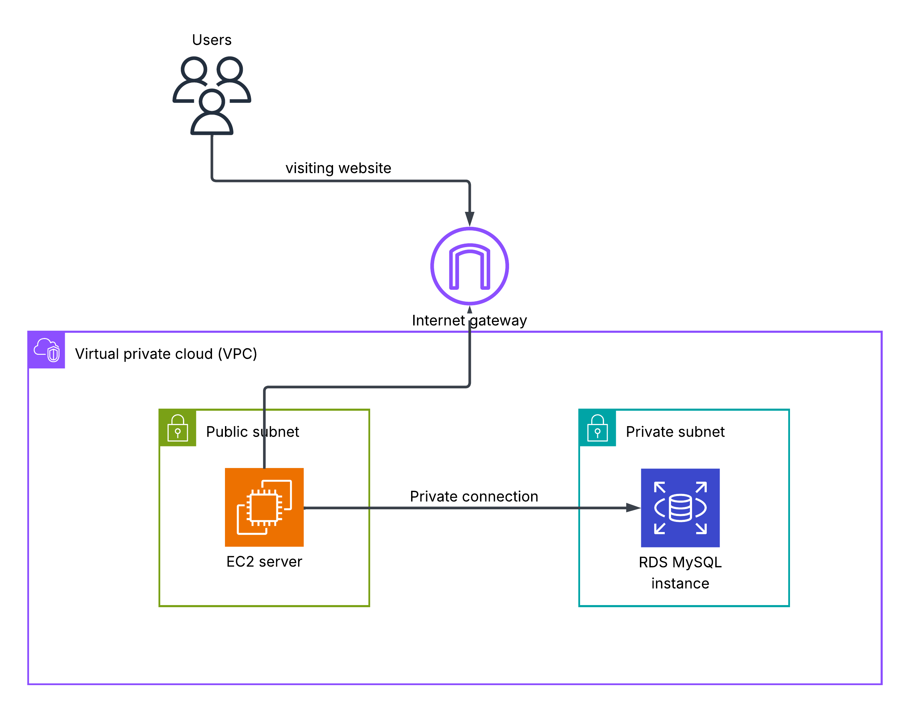
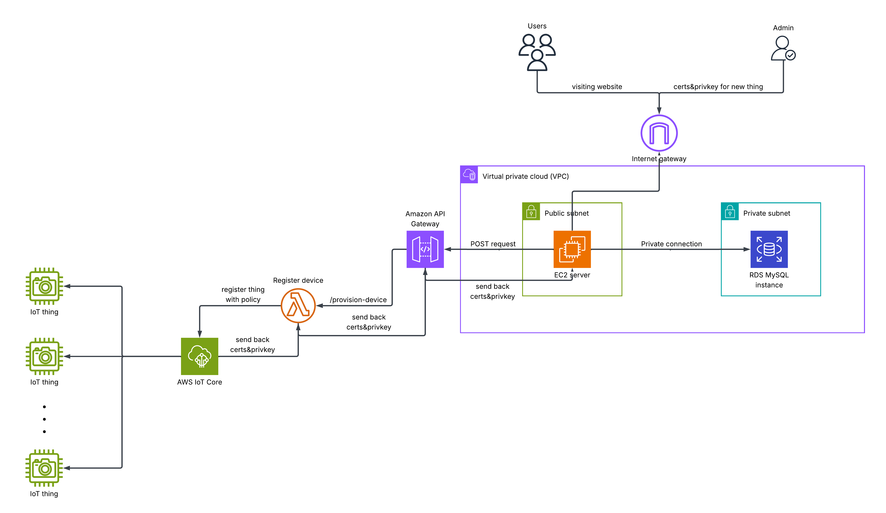
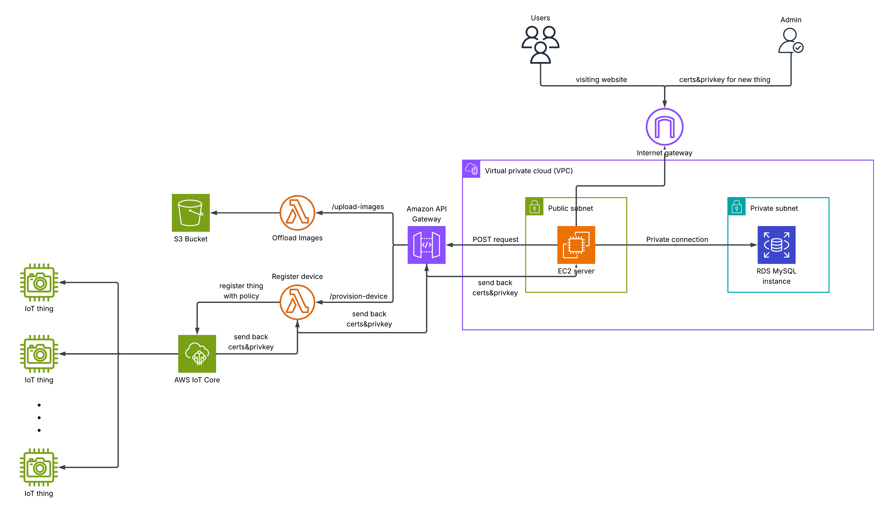

An IoT Startup
If you just want to see the demo, click here.
I was contacted a few months ago by a startup based in Spain. Their message contained the following (paraphrased):
Horse riding in Spain is incredibly popular, and if you're a stable owner, you know how big of a responsibility taking care of horses is. Sometimes, no one close to you is available to take care of them either.
This is why stable-owners typically need a horse feeder. The customers should have access to feed and monitor their horses whenever. There should be an admin account capable of registering new things after flashing the IoT device module with the certificates they receive from the website. The infrastructure should be cheap to maintain, and not require much administration after the initial setup.
I was invited to this project after the development of the website and backend logic had already begun. This is why there were sadly more constraints since the startup was short on time and needed an MVP ASAP. The main constraint was that the backend logic needed a relational database server. Most of the logic was engineered to work with a MySQL database, so that restricts my cloud engineering freedom.
Given the above, we begin implementing this startup's requirements. This project therefore consists of 3 phases:
- The initial website hosting
- The IoT functionality
- Cost and performance optimization
The Initial Website Hosting
This section shouldn't take long as we are pretty constrained on what we could do. Since the database needs to run MySQL, our two options are Aurora and RDS. The startup had estimated that their number of clients would be around 50, so Aurora would be overkill (because you'd be provisioning a cluster for a single database), and pricier than the alternative, RDS.
I then chose to host the website on a simple EC2 webserver for a couple of reasons. We need compute to ingest the video streaming regardless. If we use KVS to ingest the video streams from the IoT things, we would still need somewhere to both process this stream and host the website. Since this startup's idea is not too complex and they do not plan on adding any compute-heavy services in the future, hosting both the stream ingestion and website on the same EC2 server was the most cost effective and made the most sense.
It goes without saying that a user has N horses, each horse can be assigned a feeder + a camera or nothing. It cannot be assigned more than 1 camera or more than 1 feeder. It can be assigned a camera without a feeder and vice versa. This will be very important in the next section.
So far we get:

The IoT Functionality
Our server:
- Gives commands to feeders/cameras
- Receives streams
- Registers new feeders/cameras
In the IoT world, small devices like our feeders or cameras are called things! This is why you'll see me use this term interchangeably with the device on the client side. As an example, this is how the camera module looks like.
We use AWS IoT core as the MQTT message broker between the things and our server. We also register our server as a thing so that it automatically receives messages on the topics it subscribes to without much configuration.
Commanding the IoT Things
The backend logic handles when to publish commands (e.g. when a user clicks on the feed button). What about registering a new device? Any IoT thing requires a certificate policy attached to - you guessed it - its certificate to have permission to publish and receive messages on a given topic.
The topics I chose were:
feeders/thingName/commands- This is where the server publishes the feeding commands to the things to start feeding the horse assigned to it.feeders/thingName/events- This is where the server receives a status update on the current feeding process i.e.FEEDING_STARTED,FEEDING_RUNNINGFEEDING_COMPLETED, etc.feeders/thingName/weight-commands- The server tells the feeder to start sending the current weight (which it knows via its weight sensor) of its food only when a user logs in to save costs. It obviously also tells the sensor to stop whenever the user logs out.feeders/thingName/weight-events- This is where the weight sensor publishes its current weight to, so that the server receives it and shows it to the user.
I won't detail what these MQTT message contents contain because you could probably guess them on your own (they're just JSONs containing the information we need to provide the written functionality).
Ingesting the Video Stream
The MQTT protocol cannot handle video streaming. In fact, the maximum payload value (per message) the MQTT protocol can hold is only 128 kilobytes! This is pretty bad if we want a high resolution stream (the camera you saw earlier is capable of HD yes, so 128 kb is pretty small).
Because of the above reason, I chose to use websockets. They're pretty easy to configure, and the software engineer developing the website already had experience working with them before so that made his life easier as well.
When a user clicks start stream on a specific horse of his, the EC2 server sends an MQTT message to the topic that only this camera is subscribed to, say cameras/CAMERA-BELLA-001/commands, and then when the camera responds back on cameras/CAMERA-BELLA-001/events the server pops up the incoming video stream.
Registering New Things
Finally, we need to make it easier on the admin running the website to register new things as doing it manually is a tedious process. They first need to define the thing, create a policy for its certificate with the correct permissions, attach the policy, and then download the device certificate and private key. We can automate a big portion of this.
Using an API Gateway and a Lambda function we can create a predefined policy depending on the device (cameras and feeders have different topics as seen earlier). The backend logic generates a thing name and includes it and the device type in its HTTP post request, then the API gateway triggers a Lambda function which creates the thing, the certificate policy, and attaches it to the device's certificate. It returns the device certificate and the private key to the server which automatically downloads it on the admin's browser. The admin then flashes the certificates onto the ESP32 device to give it permission to publish/subscribe to our assigned topics.
Phew, that was a lot. We're almost there:

Cost Optimization
Now comes that extra mile that gives the project its neatness. Since we're only using one database instance, and we'd like to save as much costs as possible, we should:
- Keep the size of our data at a minimum. (RDS prices you on $0.115 per GB-month for GP3 (SSD) storage)
- Keep the I/O per second (also known as IOPS) and throughput at a minimum, i.e. let's just read from and write to the database only when necessary.
Less Data?
Well, the website design has pictures for horses. While 50 or so users isn't a lot, if each user actually owns a big stable we could get a lot of horses on our database. These pictures aren't used for anything useful, and they really don't need to be on our database, but they do act as profile pictures for each horse.
So what? Are we just gonna remove them and prevent a spanish brother from seeing his favorite image of his horse? No. I configured the same API gateway we used earlier (for registering things) to offload the images each time a new horse is added to an S3 bucket specifically holding all of our users' horse images.
A huge downside of that is that when a user inspects an image of his horse, he can see the S3 object's URL. This URL usually looks something like:
https://s3.us-east-1.amazonaws.com/bucketName/horse1.png
By bruteforcing the object name section of the above URL, malicious actors can access all of the images of the other users. This is kinda bad.
I communicated this to the client and he said it's okay. The startup's clients do not care if other users see their horses. To make this a little less vulnerable though, I ensured that most of the object names are complex through random generation of a long string.
An even better solution would be to only allow the EC2 server to access these objects, and present them to the user only when he has access to that object. However, we thought this was too much effort for a low benefit feature so we moved on to more important things.
Lower IOPS / Throughput?
I fully credit this to the software engineer working with me (you'll find his contact is at the end of this article). Earlier I mentioned that our feeder responds back with 4 states or so whenever a feeding process starts. If this happens for N users we get 4N operations on our database reading from and writing to it. This is unnecessary. We could use Redis for this, or keep the process in-memory of our EC2 server to reduce database calls. We chose the latter because of the time sensitivity.
YEAH! We reached our final architecture below:

...I want to talk just a bit more though.
Performance Optimization
When we got everything running, the FPS coming from the camera module was incredibly bad (the FPS you'll see below is actually the improved one, i know its not optimal for gaming purposes), why?
After using my computer networks skills I reached the conclusion that it was the bandwidth of the ESP. The ESP32 by default has a capped upload speed of 150 kb with an antenna, and even lower without an antenna. We were not using an antenna at the start, so we did attach one and it greatly improved.
You may ask, isn't the router that the ESP is connected to responsible for forwarding the pics it receives from the ESP to the EC2 server? Yes, but we also recall from network theory that any end-to-end connection has a maximum speed of the minimum throughput of any link in our chain. So we're ultimately capped by the ESP.
Showcase and Credits
I already linked the video in the introduction but you can also click here to see the same video.
I would not have completed this project without Ahmed Ehab, the software engineer who developed the backend logic and the frontend of the website.
I would also appreciate it if you email me with any notes of improvement you have for this, I'll write a few of my own below.
Future Improvements
Use DynamoDB
If I had gotten in earlier on this project, I would have suggested designing the database schema to not be relational so we could use No-SQL databases like DynamoDB. Why? Because it's MUCH cheaper than RDS, and would make the whole product pretty much free (except for the EC2 server).
Make ESP Camera's Independent
Currently, we also need to flash the IP of our EC2 server onto the camera module before it runs so it can stream via a websocket connection to our server. However, we could remove this dependency and make the camera independent of the IP of the server.
The idea is that the camera can publish a message to the topic its given permission to (which it can do without needing the IP of the server, since AWS IoT core is just a message broker that is not provisioned), and when the EC2 server receives this message, it understands that this startup camera message means the camera needs to know the server's IP. The server therefore responds with its own IP. Now the camera can initiate a websocket connection with the server.
Anything else?
Please email me! I love learning.